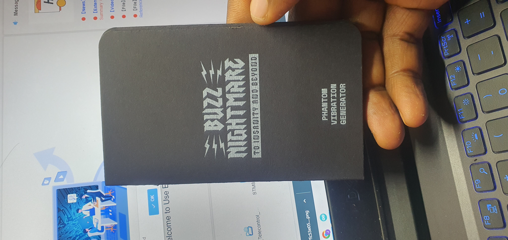
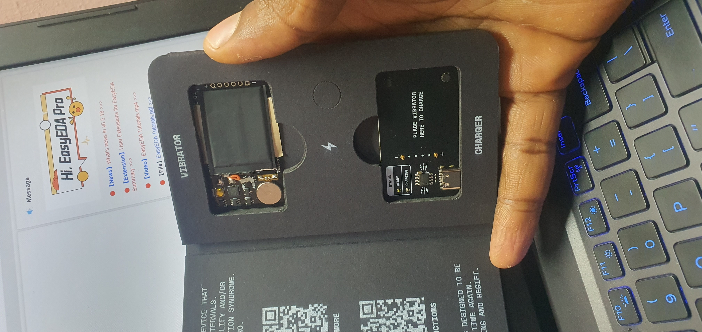
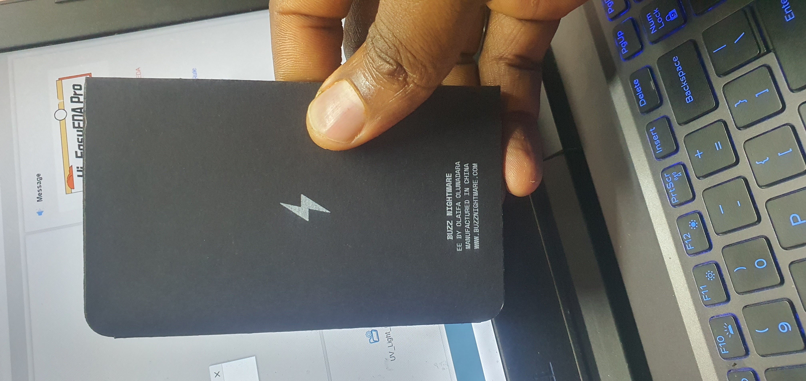
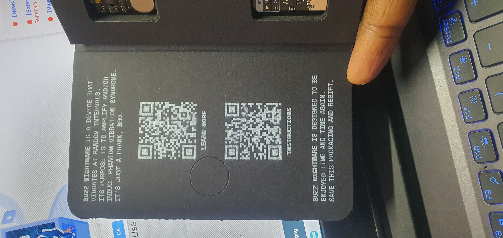

A prank device that sits between your phone case or phone or within a book and vibrates randomly - driving the "prankee" to madness wondering what the hell is vibrating. Two-board system with ATtiny25 MCU, magnetic pogo-pin charging via TP4056, and ultra-low-power firmware using TinySnore deep sleep for weeks of standby.

Buzz Nightmare is a two-board system: a vibrator board (the prank device itself) and a charger board (USB-C charging dock). The vibrator board carries the ATtiny25V MCU, JYC1018 coin motor, 50mAh LiPo, battery protection circuitry, and a slide switch - all in an ultra-slim form factor thin enough to slip behind a phone case unnoticed. Exposed charging pads on the vibrator mate with pogo pins on the charger.
The charger board has USB Type-C input, a TP4056 charge controller, N52 neodymium magnets for snap-on blind alignment, and Mill-Max 5316 press-fit pogo pins that match up to the vibrator's pads when the magnets pull the two boards together. White and green 0402 LEDs indicate charging and completion status.
Two AO3400A N-channel MOSFETs in SOT-23 drive the JYC1018 coin vibration motor. The MCU uses PWM on pin 1 to control vibration intensity - analogWrite(1, 90) for a standard buzz and analogWrite(1, 150) for a stronger pulse. The FS8205A dual MOSFET IC handles battery undervoltage and overcurrent protection, while the RUDW01C6 provides additional safeguards for the tiny 50mAh cell.

The ATtiny25V runs at 8MHz internal oscillator (fuse-configured, no external crystal) and spends nearly all its time in deep sleep via the TinySnore library. The final firmware randomly alternates between two buzz patterns - a single 500ms pulse and a double-tap (320ms + 300ms with a 25ms gap) - then sleeps for roughly 50–70 minutes (1 hour ± 10 minutes of randomness). The random seed comes from floating analog pin readings for true unpredictability.
Earlier firmware versions supported three selectable modes stored in EEPROM: Mode 1 (20–40 min intervals), Mode 2 (50–70 min), and Mode 3 (110–130 min). Mode cycling was done by toggling the power switch - each power-on incremented the mode counter in EEPROM and confirmed with 1, 2, or 3 buzzes. An initial "reaction buzz" fires 10 seconds after power-on so you can verify the device is working before planting it.
The charger uses N52 neodymium magnets (the strongest commercially available grade) for snap-on alignment between the vibrator and charging dock. The TP4056 handles CC/CV LiPo charging at ~50mA (set by a 24K RPROG resistor), with two 5.1K pull-down resistors on USB-C CC pins for spec-compliant 5V negotiation. The charging current is intentionally low to safely charge the tiny 50mAh cell - a full charge takes roughly an hour.

Both PCBs were designed in KiCad with a custom component library including footprints for the battery, coin motor, magnetic charging pads, pogo pin contacts, and slide switch. The silkscreen features extensive branding - the Buzz Nightmare logo, "PHANTOM" tagline, QR code linking to buzznightmare.com/instructions, lightning bolt graphics, and regulatory text. Every component has a 3D STEP model for accurate mechanical validation.
Production files (BOM, pick-and-place positions, netlists) were generated for JLCPCB SMT assembly. The project includes FCC SDoC (Supplier's Declaration of Conformity) documentation for regulatory compliance - covering labeling requirements, testing FAQs, and declaration procedures for the consumer electronics market.

I handled the complete product lifecycle from concept through production: circuit design, firmware development and iteration (3 firmware versions), PCB layout for both boards, custom silkscreen artwork and branding, BOM optimization for cost-effective manufacturing, FCC compliance documentation, and manufacturer coordination in China. The result is a production-ready consumer prank device with custom packaging and the buzznightmare.com brand.